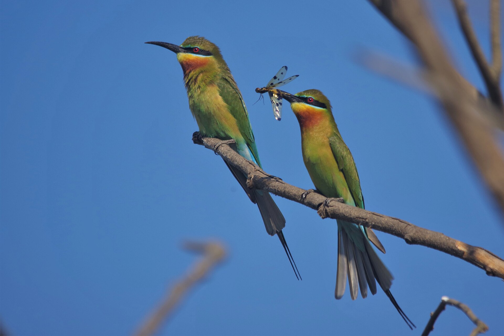
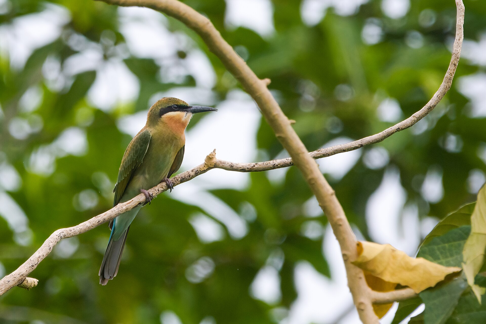

The Blue-tailed Bee-eater is a slender, colorful bird found across South and Southeast Asia. It is known for its graceful flight and skillful hunting of bees and other insects.

This bee-eater prefers open country, riverbanks, and farmland. It nests in sandy banks, feeds mid-air on flying insects, and migrates seasonally in large, vocal groups.
Read more about this bird and its wonderous characteristics on portals like E-Bird.